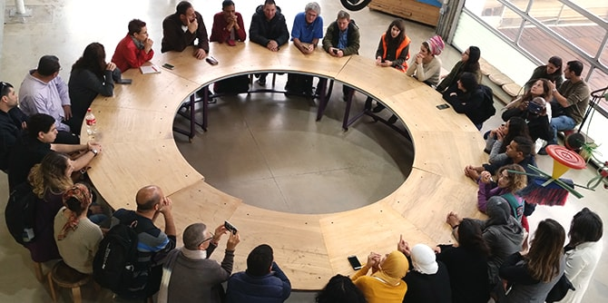

בהקדמה לספרו של מרטין וייל, "חירייה: על צחנה ויופי – יומן אישי", כתב חיים גורי כי במהלך ביקורו באתר הוא נזכר "... באלכימאים שביקשו להפוך מתכות לזהב. כאן ב'מזבלת חירייה', ההופכת לעינינו לפארק לאומי ולאתר מחזור ראשון במעלה, ראינו כיצד נעשו האשפה והפסולת מוצרים מעניקי חיים המשמרים את סביבתנו, מגוננים עליה ויוצרים בה ערכי יופי לישראלים ולתיירים שיבואו."
ב-21 בנובמבר יצאו כ-30 מעמיתי מרכז מנדל למנהיגות בצפון (מחזור א' של התוכנית למנהיגות חברתית ומחזור ב' של התוכנית האזורית) לסיור באתר הפסולת "חירייה" ובפארק אריאל שרון. הסיור נפתח בהסבר על סוגיית מחזור הפסולת בארץ ובעולם, ונמשך בדיון על שאלות רחבות של חברה וקיימות. לאחר מכן המשיכה הקבוצה לסיור מודרך במתחם, הכולל את תחנת המעבר שבה נאסף הזבל מ-24 רשויות מקומיות במרכז, דרך מפעל RDF האמון על התמרת אשפה בדלק מוצק עבור תעשיית המלט, ומשם להר הזבל לשעבר – כיום פארק מוריק ופורח.
גולת הכותרת של הסיור הייתה פגישה עם ד"ר מרטין וייל, היזם והכוח המניע מאחורי פארק אריאל שרון והפיכת אתר הפסולת למרכז מחזור וחינוך לקיימות. בשיחתו עודד ד"ר וייל את העמיתים לחלום ולא להיבהל מהקשיים והמכשולים העומדים תמיד בדרכם של יזמים ופורצי דרך.

{kind=link}